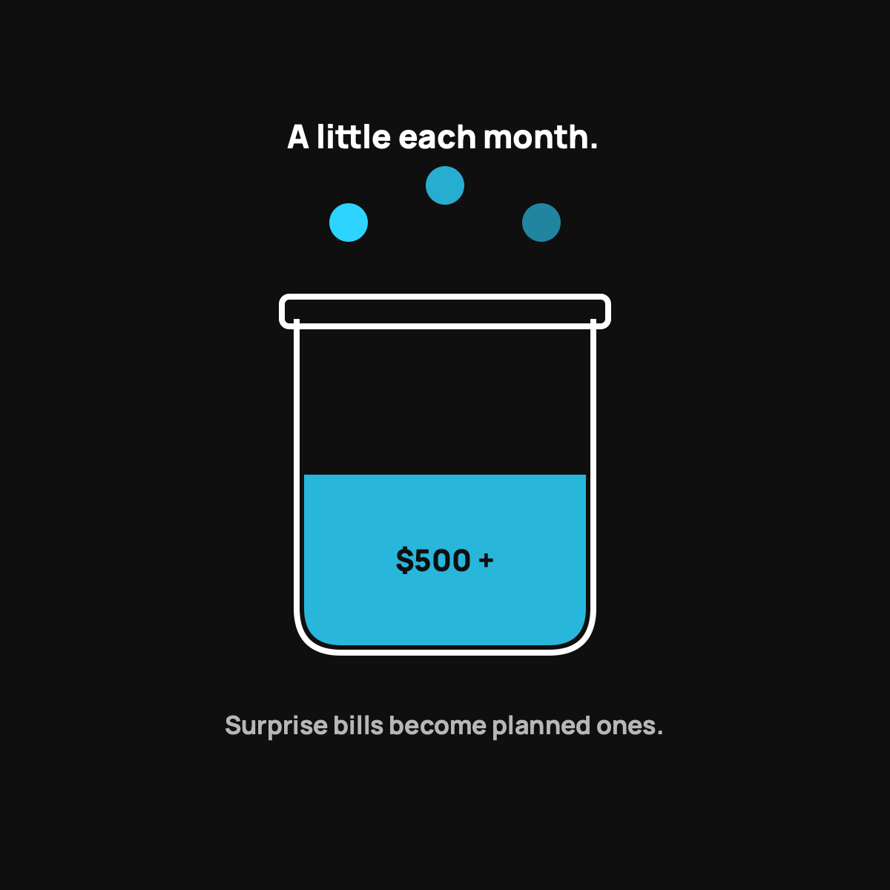

Budgeting When You're Self-Insured
One boring habit turns surprise bills into planned-for expenses: the sinking fund.
If you're on a high-deductible plan or health sharing, you're partly self-insured, and the habit that makes it work is a healthcare sinking fund. Park your event number ($500 on health sharing), build a buffer of a few thousand on top, automate a small monthly transfer to a separate account, and feed it with the premiums you're no longer paying.

"Self-insured" sounds fancy, but it just means this: you've decided to cover some of your own risk instead of paying a company to cover all of it. Anyone with a high deductible is partly self-insured already. Anyone on health sharing is too. The trick that makes it work isn't luck. It's a boring little budgeting habit that turns scary surprise bills into planned-for expenses. Here's how to do it.
The one idea that makes self-insuring work
It's called a sinking fund. Fancy name, simple idea: you save a little money every month toward an expense you know is coming eventually, even if you don't know exactly when.
You already do this without thinking. You know your car will need tires and brakes someday, so a smart person sets aside a bit each month instead of panicking when it happens. Your health works the same way. You don't know when a health event will hit, but you know one eventually will. So you fund for it on purpose, ahead of time.
How to build your healthcare sinking fund
Here's the simple version I'd follow:
- Start with your event number. If you're on health sharing, that's your $500 per-event commitment. Get that amount parked and keep it there, always ready.
- Add a buffer on top. Aim to build past the single event toward a cushion of a few thousand, so two things in one year, or a gap, never wrecks you.
- Automate a small monthly transfer. Even a modest amount each month into a separate savings account adds up fast and quietly. This ties right into the DIY safety net I laid out.
- Keep it separate and boring. A different account you don't touch. Out of sight, so you're not tempted to raid it for a vacation.
Where the money comes from
Here's the quiet win. When you self-insure well, your regular monthly healthcare cost usually drops, because you're not paying fat premiums. That gap between what you used to pay and what you pay now is exactly what feeds the sinking fund. You're not finding new money. You're redirecting the savings into your own cushion instead of a company's pocket.
Do that, and over a year or two you build a personal buffer that does the job people think only insurance can do for the small and medium stuff.
The honest caution
Self-insuring works great for the small and medium bumps. It does not, by itself, cover a true catastrophe. That's why the sinking fund is a layer, not the whole plan. You still want real coverage for the big stuff behind it, whether that's insurance or health sharing. The budget habit protects the front line. It's not the whole army.
The takeaway
Budgeting when you're self-insured comes down to one habit: a healthcare sinking fund. Park your event number, build a buffer on top, automate a small monthly transfer, and feed it with the money you save on premiums. It turns "surprise" bills into ones you already planned for. Boring, quiet, and exactly the kind of thing that lets normal families sleep at night.
Questions I get about this
What is a sinking fund?
Saving a little every month toward an expense you know is coming eventually, even if you don't know exactly when. You already do it for tires and brakes. Your health works the same way: you don't know when a health event will hit, but you know one eventually will.
How much should be in my healthcare sinking fund?
Start with your event number and keep it parked. Then build past it toward a cushion of a few thousand, so two events in one year, or a gap, never wrecks you. It's a layer in the DIY healthcare safety net, not the whole plan.
Where does the money for the sinking fund come from?
From the gap between what you used to pay in premiums and what you pay now. You're not finding new money. You're redirecting savings into your own cushion instead of a company's pocket.
Nothing here is medical, tax, or financial advice, just the habit that works for my family. My family uses CrowdHealth, so I'll always flag when a post is a referral. This one isn't.

Written by David Dewese
Normal guy with a full-time job, wife, and kids. Spent twenty years pursuing music and creative ventures before starting a family. Sharing tips and tricks on how to thrive while living on an artist's income. Not a financial advisor. More about me.
New here?
Normaltown USA is plain-English money and healthcare help for normal people, written by a regular guy with a family of four. No jargon, no hype. Start here, or read the FAQ.